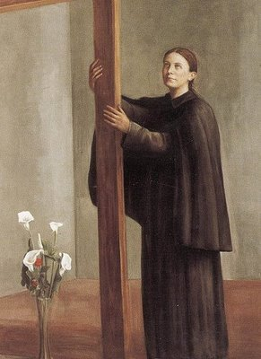
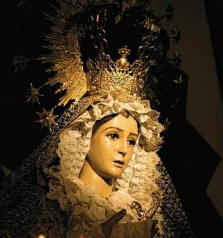
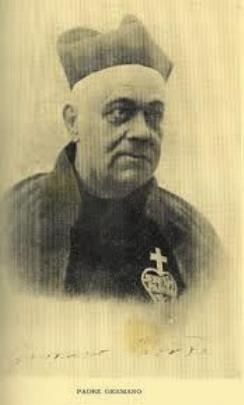
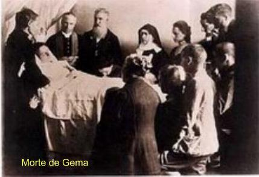
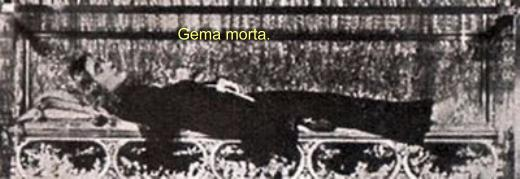
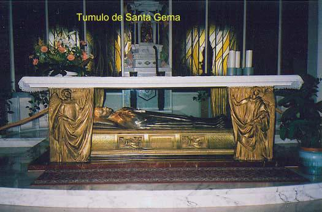
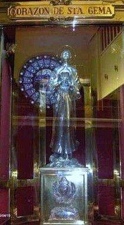
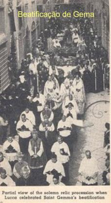
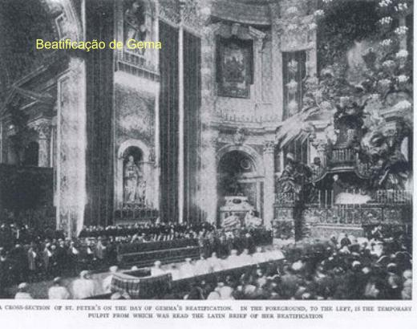

"DESCRENÇA E ABANDONO"
O RACIOCÍNIO PEQUENO DE ALGUNS
Alguns dias depois ela escreveu outra carta ao Padre Germano: 
"Ontem JESUS me deu a entender o que as pessoas pensam a meu respeito: uns acham que sou sonâmbula, outros pensam que isso é doença, outros dizem que eu mesma provoco as chagas nas mãos e nos pés"...
Luca era uma cidade do interior, pouco desenvolvida. O nível de educação e instrução de seus habitantes naquela época era muito baixo. E por isso, diante dos fatos que aconteciam com Gema, muitos criticavam e a chamavam de histérica. Uns mais ousados e mal educados chegavam agredi-la com palavras e até a empurravam, arremessando-a ao solo. Ela se levantava calma e sem nervosismo, ajeitava o crucifixo que trazia pendurado ao pescoço e feliz, por se ter assemelhado a JESUS na "Via Crucis", retomava o seu caminho sem olhar para trás.
LIÇÕES DE JESUS
A lição mais sublime de JESUS não é a humildade, mas o amor. "Tendo amado os seus que estavam no mundo, amou-os até o fim". (Jo 13,1)
Gema aprendeu integralmente esta lição Divina. Poderão apreciá-la nos trechos a seguir, colhidos pela senhora Cecília e a senhora Eufêmia, durante os êxtases:
"Será possível SENHOR, existir um coração que não palpite de amor por TI"?
"JESUS, TE amo muito e quero TE amar sempre. Queres saber por quê? Porque no mundo não há amor tão sincero e profundo como o TEU".
"JESUS, TU dizes que me ama, mas eu não acredito, porque duas coisas contrárias não podem se amar: TU amas a perfeição, e eu JESUS, sou tão imperfeita".
A DOENÇA ESTÁ SEMPRE PRESENTE
No mês de Maio de 1902, Gema adoece novamente. A senhora Cecília informa ao Padre Germano: "Ela está em pele e osso". Ele vem e a visita no mês de Junho e mais uma vez se certifica, tudo o que lhe acontece é obra do ESPÍRITO DE DEUS. O diálogo que mantiveram levou-o a convicção plena de que as coisas admiráveis que lhe aconteciam se realizava por obra de DEUS. O Padre Germano era um homem sério e muito respeitado, e tinha uma instrução religiosa tão profunda, que foi nomeado pela Santa Sé como Consultor da Sagrada Congregação das Indulgências. Ele declarou:
"De uma coisa não posso duvidar: a minha alma tem usufruído grandes benefícios espirituais, como resultado do contato com essa serva de DEUS. Tenho vindo a sentir que meu coração tem rejuvenescido na fé, no desejo das coisas do Céu e no amor à virtude".
Gema voltou a adoecer. Todavia, assim que o seu organismo começou apresentar melhoras, com o intuito de ajudar na sua recuperação, a senhora Cecília a convidou e levou à bela praia de Viareggio, onde a família Giannini gostava de passar as férias. Eufêmia recordava os dias passados com ela na praia:
"Gema ia conosco, mas não tomava banho de mar, embora gostasse de nos ver nadar. Ela foi sempre muito natural, simples e reta em todos os seus atos, sem afetação, séria e reservada, mas educada e bondosa com todos".
Ao regressar da praia encontrou a sua irmã Júlia muito magra e debilitada. Pouco tempo depois acabou falecendo, no dia 19 de Agosto de 1902. A morte da irmã causou-lhe um profundo sofrimento. E na verdade, ela mesma voltou a não se sentir bem, há três dias não conseguia reter nada no estomago. A senhora Cecília a forçou a se alimentar, dando-lhe um copo de leite, mas o estomago não aceitou, e ela chegou a colocar sangue até pelo nariz.
VISITA DA MÃE DE DEUS 
No dia 9 de Setembro de 1902, estando um pouco melhor, escreveu ao Padre Germano:
"Na terça-feira estava quase adormecendo, quando me apareceu uma linda SENHORA! Quis chamar à senhora Cecília para vê-la, mas logo em seguida entrei em êxtase... Era a MÃE DE DEUS que me olhava sorrindo e me disse":
- "Minha querida filha, tu és para mim como o perfume de um agradável incenso"!
"Ela me tomou em seus braços e eu quase morri de tanta doçura. Disse-me que estava quase na hora de eu subir ao Céu e me convidou à perfeição da humildade e da obediência. Depois disse":
- "Diz ao Padre Germano que, se ele não te levar para o Convento, Eu voltarei e te levarei Comigo para o Paraíso".
"Naquele mesmo dia recuperei a saúde".
A MORTE ESTÁ PRÓXIMA
Dia 21 de Outubro, Gema ficou novamente doente, agora também em consequência da morte de seu irmão Antonio. A senhora Cecília mandou um recado urgente ao Padre Germano que veio imediatamente para vê-la. Diante do precário estado de Gema, lhe administrou o Sacramento da Extrema Unção. O Padre descreve o diálogo:
- "Então, Gema, o que se passa"?
- "Padre, vou partir para junto de JESUS".
- "Fala mesmo a sério"?
- "Sim, desta vez é mesmo a sério. Foi JESUS quem me disse com toda clareza".
- "E quando te vais purificar de tuas faltas"?
- "JESUS já pensou em tudo. Vai me enviar muitos sofrimentos, e eu santificarei as minhas dores pelos méritos da Sua Paixão. Finalmente, ELE se dará por satisfeito e me levará com ELE"...
- "Mas eu não quero que ELE te leve já".
- "Mas se ELE mesmo quer"? Respondeu ela com vivacidade.

- "Não quero que ninguém toque no meu cadáver, porque ele é todo de JESUS".
Diante de como aconteceram às coisas, a viagem apressada, o estado deplorável da jovem, o sacerdote se emocionou, como ele próprio revela:
"Embora acostumado a ver e ouvir frequentes transformações nas almas, eu confesso que daquela vez chorei. Aquele dia, aquele quarto e aquele leito jamais se apagarão da minha memória". Todavia, estando obrigado a regressar a Roma por assuntos do seu trabalho, o Padre perguntou a Gema quanto tempo ia durar a enfermidade. Ela lhe respondeu:
- "Padre, pode viajar quando quiser. Esta será a minha última doença, mas minha hora ainda não chegou. Foi o que JESUS me disse".
O Padre Germano concluiu: "Abençoei aquele anjo pela última vez e me despedi". (Biografia)
Os médicos não chegaram a nenhum acordo sobre a natureza da doença de Gema: alguns diziam que é tuberculose, mas o Dr. Del Prette, após minuciosa análise não encontrou o bacilo de Cock, mas apenas sintomas de diabetes, e por isso pensou de que se tratava de "neoplasia pulmonar".
OBRIGADA A DEIXAR A FAMÍLIA GIANNINI
Embora ela sofresse no corpo, mas é no seu espírito onde se notam os maiores tormentos. Como precaução, para evitar o contágio da doença, conforme a austera recomendação médica, a família Giannini optou por isolar Gema do convívio dos outros membros, porque na casa onde viviam havia doze (12) filhos, além dos pais e dos servidores da família. Para solucionar o difícil problema, as tias Elisa e Helena alugaram uma pequena residência perto dos Giannini e no dia 24 de Janeiro de 1903, fizeram a mudança. Foi uma separação dolorosa e triste. Gema mudou-se com uma profunda angústia, e neste mesmo dia, a senhora Cecília escreveu ao Padre Germano com o coração trespassado e sangrando:
- "Esta manhã fui obrigada a levar Gema para outra casa. Foi para ela uma autêntica tortura interior, Padre! Chorava muito e dizia":
- "Por que me mandas embora? Preciso tanto de ti! Porque me abandonas? JESUS, também estou fazendo este enorme sacrifício"...
- "Pobre Gema, como se sentiu abandonada por todos"!
Ela vivia momentos de profundíssima e terrível depressão. É proibida de comungar! Que grande desgosto, a Eucaristia sempre foi a sua alegria e sua própria vida! A enfermidade progride violentamente. Dia 18 de Março de 1903 escreve sua última carta ao Padre Germano. O texto apresenta como se ela estivesse reproduzindo um colóquio com a VIRGEM MARIA:
- "Minha querida Mãe, o meu destino é lutar sempre, mas me sinto feliz. Situada entre o amor e a esperança, abandono-me em DEUS. Minha Mãe sabe que não me encontro bem. Minha vida apaga-se lentamente. Assaltam-me horrorosos pensamentos". (Depois deixou um espaço em branco e logo escreveu)
- "Padre Germano pede a JESUS por mim. Quero partir em breve para o Paraíso. Não posso ficar mais tempo neste mundo".
MORTE DE GEMA
Nos últimos dias de vida os sofrimentos de seu espírito aumentaram de
intensidade. O demônio aproveitando as oportunidades procurou 
No dia 8 de Abril, Quarta-feira Santa, ela entra em profundo êxtase. Quando acorda, diz a Irmã barbantina que a acompanhava: "Irmã, se pudesses ver o que JESUS me mostrou agora, como serias feliz"!
No mesmo dia recebe o Padre Angeli, que lhe leva o Santo Viático. Junto com ele, sua irmã Ângela foi visitá-la. Foi um encontro amoroso e repleto de carinho. Gema apertou-lhe a mão com um afetuoso sorriso de despedida.
Sexta-feira Santa ela pede a senhora Cecília: "Não me abandone até eu ficar cravada na cruz, porque JESUS sempre me disse que todos os seus bons filhos devem morrer crucificados". Depois, estendeu os braços e ficou imóvel. Posteriormente à senhora Cecília dirá ao Padre Germano: "Naquele momento, vi como se fosse à imagem de JESUS agonizante".
Monsenhor Volpi, que tinha sido o seu confessor, vem visitá-la. No dia 11 de Abril, Sábado Santo, às 8 horas da manhã, o Padre Andreuccetti, Pároco de Luca, lhe ministra novamente o Santo Viático. Pouco depois, outro sacerdote, o Padre Luis Carnicelli, lhe ministra outra vez a Extrema Unção. Ao meio dia o Padre José Angeli absolve-a pela última vez. Em certo momento, Gema pega o crucifixo e diz: "JESUS, não posso mais. Se for a TUA Vontade, leva-me para junto de TI"! Em seguida, eleva o olhar para um quadro da VIRGEM MARIA e, com uma voz pequena, suave e suplicante pronuncia: "Minha Mãe querida, entrego-Te a minha alma. Diz a JESUS que tenha misericórdia de mim". Eram 13horas e 45 minutos. Com 25 anos e um mês de idade, inclinou a cabeça sobre o ombro da senhora Justina e de seus olhos rolaram duas grandes lágrimas, enquanto sua alma silenciosamente partia para a Casa do PAI ETERNO, concluindo dignamente a sua missão de "Vítima de JESUS Crucificado".
O Pároco de Luca, Padre Andreuccetti mandou revesti-la com o hábito passionista, porque ela era de fato, uma "filha da paixão". No dia seguinte, o seu corpo foi colocado num sepulcro escavado na terra virgem.
Ao saber do ocorrido, Padre Germano se deslocou até Luca, aonde chegou no dia 26 de Abril de 1903. Pouco tempo depois é feita a exumação do corpo, sendo lhe extraído o coração, que para admiração de todos os médicos, estava flexível e fresco, cheio de sangue, como se estivesse num corpo vivo. O coração de Gema foi colocado num lindo relicário e permaneceu na Casa Geral dos Missionários Passionistas, em Roma.
PROVIDÊNCIAS PARA A BEATIFICAÇÃO E CANONIZAÇÃO
Padre Germano aproveitou a sua estada em Luca para recolher depoimentos e testemunhos sobre a vida de Gema Galgani, assim como o caderno onde ela descreveu a sua Autobiografia, também conseguiu o caderno em que Eufêmia Giannini registrou os êxtases, além de uma quantidade numerosa de cartas, com o objetivo de juntar elementos para o processo canônico que, futuramente foi instaurado.
Sem perder tempo, como Gema era totalmente desconhecida, preparou a "Biografia da Serva de DEUS Gema Galgani", que foi publicada em Roma em 1907, com recursos do Padre Quillici que a batizou. Foi um sucesso.
No mesmo ano de 1907 tem inicio as diligências introdutórias ao processo de Canonização. Todavia, em 1909 com a morte repentina e imprevista do Padre Germano Ruoppolo de Santo Estanislau, aconteceu um atraso no andamento das formalidades e da continuidade do processo. Somente no dia 28 de Abril de 1920, o Papa Bento XV assinou o decreto que dava inicio oficialmente, a causa de Beatificação e Canonização de Gema.
No dia 29 de Novembro de 1931, após minucioso estudo sobre todos os acontecimentos de sua vida, o Papa Pio XI assinou o decreto de "Declaração da heroicidade das suas virtudes".
Pouco tempo depois morreu Monsenhor Volpi, que tinha sido confessor de Gema e no dia 24 de Dezembro do mesmo ano, também faleceu a senhora Cecília, testemunha privilegiada das principais ocorrências na vida da jovem.
No dia 14 de Maio de 1933 em sessão solene na Basílica de São Pedro, a bem-aventurada Gema Galgani foi "BEATIFICADA" por Sua Santidade o Papa Pio XI. E finalmente no dia 2 de Maio de 1940, durante a II Grande Guerra Mundial, o Papa Pio XII Canonizou a Beata, que foi a primeira "SANTA" do século XX.
Os restos mortais de Gema estão na bonita Igreja do Mosteiro Passionista em Luca, na Itália. Atualmente, o coração que foi retirado e colocado num magnífico relicário, está no famoso Santuário de Santa Gema, em Madri, na Espanha.
No Brasil a devoção a Santa Gema Galgani está bastante difundida, inclusive pelo fato de seu pai Henrique Galgani ter sido Farmacêutico e depois da morte dele, ter sido ela acolhida pela família Giannini que também vivia no ramo de Farmácia, carinhosamente foi escolhida "Padroeira dos Farmacêuticos".




